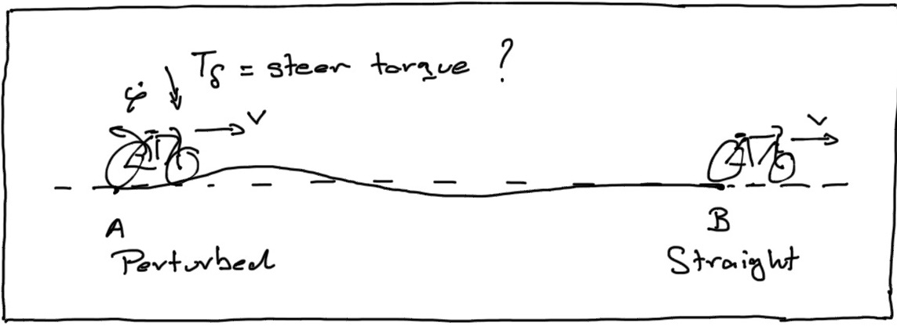

|
TU Delft Mechanics Colloquium |
|
|
|
Delft University of Technology |
|
TU Delft Mechanics Colloquium |
|
|
|
Delft University of Technology |
Related WWW pages: Advice and information for MC speakers
Organizer: Arend Schwab <a.l.schwab@tudelft.nl>
Logistics/lodging/re-imbursement/travel contact: Corinne du Burck <C.P.duBurck@tudelft.nl>
Contents of this page:
I. Scheduled speakers
II. Accepted speakers not yet scheduled
III. Invited but not yet accepted speakers
IV. People to possibly invite
V. To put off to 2009-2010 academic year
VI. Invited speakers who can't come at all

This page was updated Sep 29, 2009. I. Schedule 2009-2004 ^^^^^^^^^^^^^^^^^^^^^^^^^^^^^^^^^^^^^^^^^^^^^^^^^^^^^^^^^^^^^^^^^ Thu, Oct 1, 2009, 9:45-10:30, Room 4B-1-49 Ichiro Kageyama, Professor of Nihon University, Japan College of Industrial Technology Department of Mechanical Engineering mailto: kageyama.ichiro@nihon-u.ac.jp Host = Schwab abstract Thu, June 4, 2009, 12:45-13:30, Room D Jason Moore, Sports Biomechanics Laboratory, UCDavis, CA, USA <jkmoor@ucdavis.edu>, "First Look at Rider Biomechanics while Controlling a Bicycle", Host = Schwab abstract Wed, Apr 8, 2009, 12:45-13:30, Room B Jack Booker, Cornell University, Ithaca, NY, USA <booker@cornell.edu>, "Numerical Analysis of Dynamically-Loaded Journal Bearings", Host = Schwab abstract Fri, Oct 3, 2008, 11:00-12:00, Room E Jim Papadopoulos, Green Bay, WI <papadopoulos@alum.mit.edu>, "On Bicycle Handling and Self-Stability", Host = Schwab, abstract. Wed, May 28, 2008, 13:30-14:30, Faculty Room Mont Hubbard, University of California, Davis <mhubbard@ucdavis.edu>, "Safe Ski Jump Landing Slope Design", Host = Schwab, abstract. Wed, Apr 9, 2008, 14:00-14:45, Lecture Room F Myriam Verschuure, Katholieke Universiteit Leuven, Belgium <myriam.verschuure@mech.kuleuven.be>, "Counterweight balancing: determining limits of performance through convex optimization techniques", Host = Just Herder, abstract. Tue, Jun 12, 2007, 12:45-13:30, Room J Sunil K. Agrawal, University of Delaware, Newark, DE, USA <agrawal@udel.edu>, http://mechsys4.me.udel.edu "Differentially Flat Design of Bipeds and Under-Actuated Robots", Host = Schwab, abstract, presentation pdf 1,188 KB Fri, Mar 30, 2007, 12:45-13:30, Room C Jorge Ambrósio, IDMEC/IST, Instituto Superior Técnico, Technical University of Lisbon,Portugal <jorge@dem.ist.utl.pt>, http://www.dem.ist.utl.pt/IDMEC/ "Multidisciplinary Applications Using Multibody Dynamics as the Framework for Developments", Host = Schwab, abstract, Mon, Nov 27, 2006, 12:45-13:30, Room J Johannes Gertsmayr, Johannes Kepler University of Linz, Austria, <johannes.gerstmayr@jku.at>, "Advanced Methods for Large-Scale Flexible Multibody Systems", Host = Schwab abstract, presentation pdf 546 KB Animations of the examples can be found at: http://tmech.mechatronik.uni-linz.ac.at/staff/gerstmayr/hotint.html Mon, Aug 15, 2005, 14:00-14:45, Room J Michael Coleman, University of Vermont, VT, USA, <mcoleman@emba.uvm.edu>, "A rigid body on a skate: another device that cannot stand still but balances while moving", Host = Schwab abstract, presentation (zip 10,384 KB) Wed, Jun 28, 2006, 15:00-15:45, Room C Jack Booker, Cornell University, Ithaca, NY, USA <booker@cornell.edu>, "Never the twain shall meet: Separating solid surfaces with fluid films ", Host = Schwab abstract Mon, May 30, 2005, 15:45-16:45, Room J Wan-Suk Yoo, Pusan National University, Pusan, South Korea, <wsyoo@pusan.ac.kr>, "On flexible multibody simulations and experiments for large deformation problems", Host = Schwab abstract Tue, Mar 22, 2005, 10:45-11:45, Conference Room 4 (38-8b-2nd floor) Ishan Sharma, Univ of Cambridge, UK, <I.Sharma@damtp.cam.ac.uk> "Equilibrium Configurations of Ellipsoidal, Soil-Like, Spinning Asteroids.", Host = Schwab abstract, presentation (ppt 1,446 KB) Mon, Mar 7, 2005, 13:45-14:45, Room M Yoshiaki Terumichi, Sophia University, Tokyo, Japan, <y-terumi@sophia.ac.jp> "An Experimental and Numerical Approach for Pattern Formation Phenomena", Host = Schwab abstract, presentation (ppt 9,540 KB) Mon, Feb 21, 2005, 15:45-16:45, Room E Jaap Meijaard, Univ of Nottingham UK, <Jaap.Meijaard@nottingham.ac.uk> "A physical tire model for the analysis of vehicle handling", Host = Schwab abstract Fri, Oct 15, 2004, 15:00-15:45 Room D Shinya Aoi, Kyoto University, Kyoto, Japan, <shinya_aoi@kuaero.kyoto-u.ac.jp> "Stability Analysis of a Simple Walking Model Driven by a Rhythmic Signal", host = Van Woerkom abstract Tue, Oct 12, 2004, 15:45-16:45 Room E Knoek van Soest, Free University Amsterdam, <a_j_van_soest@fbw.vu.nl> "Biomechanics of Pedaling; Simulation Studies on the Relation between Mechanical Power Output and Kinematical Constraints on Leg Motion", host = Schwab abstract, presentation (pdf 2,765 KB) Mon, Sep 20, 2004, 15:45-16:45 Room J Andy Ruina, Cornell University <ruina@cornell.edu> "Some Mechanics Perspectives on Robot Locomotion", host = Schwab abstract Wed, Jun 9, 2004, 11:00-12:00 Room ? Karl Åström, Lund Institute of Technology <kja@control.lth.se> "Bicycle Dynamics and Control", host = Schwab abstract, presentation (pdf 2026 KB) Fri, Mar 5, 2004, 15:45-16-45, Room R (opposite the faculty room) Jaap Meijaard, Univ of Nottingham UK, <Jaap.Meijaard@nottingham.ac.uk> "Continuering van oplossingen en vertakkingen voor multibodysystemen met toepassingen in de dynamica van motorfietsen", Host = Schwab abstract Wed, Dec 17, 2003, 14:45-15:45, Room U (IO building, above entrance) Arend Schwab, TUDelft, <a.l.schwab@wbmt.tudelft.nl> "Stability of an Uncontrolled Bicycle", Host = Helm abstract, presentation (ppt 1924 KB) II. Accepted SPEAKERS (not yet scheduled) ^^^^^^^^^^^^^^^^^^^^^^^^^^^^^^^^^^^^^^^^^ III. Invited but not yet committed3 ^^^^^^^^^^^^^^^^^^^^^^^^^^^^^^^^^^ IV. Possibilities (not yet invited)
^^^^^^^^^^^^^^^^^^^^^^^^^^^^^^^^^^^ V. For 2009-2010 season (provisionally accepted invitation) ^^^^^^^^^^^^^^^^^^^^^^^^^^^^^^^^^^^^^^^^^^^^^^^^^^^^^^^^^^^^ VI. Can't give a seminar ^^^^^^^^^^^^^^^^^^^^^^^^^